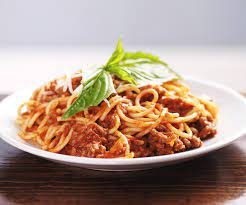

Meat Pasta
back to home page

This is what spaghetti bolognese looks like
Ingredients needed:
- 1lb spaghetti
- 1lb ground beef
- 1L olive oil
- 2 cans of tomato sauce
- Tbsp minced garlic
- Tbsp fennel seed
- 1 can parmesean cheese
- oregano
- italian seasoning
- basil leaves
- 1 onion
Steps
- Chop 1 onion into small bits and mince garlic.
- Fill bottom of frying pan on low heat with olive oil. Add onioni and garlic to pan and cook until lightly browned.
- While onions and garlic are browning, fill a large pot with ~1 gallon of water and place on back burner on high heat to begin boiling
- Brown ground beef in frying pan on medium-high heat. Mix with fennel seed to help give it an italian sausage taste. Add salt, pepper, garlic powder if desired.
- While meat is browning, add tomato sauce to a second large pan and begin adding herbal ingrediants as well as some parmesian cheese. Optional: use poor a small dash of red wine in for more body and a couple tbsp of sugar to counteract the acidic taste.
- Strain meat of greese, then add to sauce pot and cook on medium heat, stirring every 2 minutes
- Water should now be boiling. Add noodles to boiling water and stir regularly.
- Check noodles until cooked to desired consistency. Strain noodles when done and turn off heat
- Add noodles to meat and sauce pot, then stir vigerously to help noodles absorb the flavor. Feel free to add a lot more parmesan cheese at this stage.